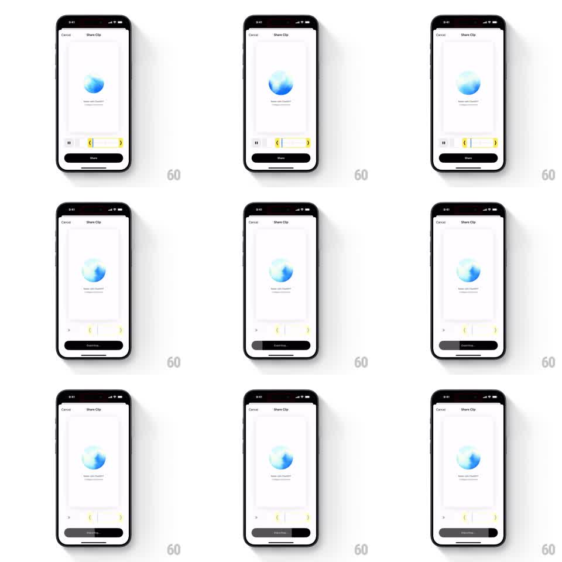

Media
Frame-by-frame

Rebuild this animation 1:1: ChatGPT's Share Clip export button - tapping Share morphs the button into an exporting state where a progress fill sweeps horizontally across the button until it completes.

Rebuild this animation 1:1: ChatGPT's Share Clip export button - tapping Share morphs the button into an exporting state where a progress fill sweeps horizontally across the button until it completes. ## Integration Integration: stack-agnostic spec - springs given as stiffness/damping, timed motions as duration + curve; map every value to your framework and animation library of choice. ## Scene ChatGPT's "Share Clip" sheet: a chat preview card (blue orb avatar) center, a trim timeline with yellow handles below it, and a full-width black "Share" button pinned at the bottom. Tapping Share turns the button into a progress state: its label becomes "Exporting..." and a lighter fill sweeps across the button from left to right. ## Motion spec Pattern: button progress fill, ~3s total. - On tap, the button's label crossfades from "Share" to "Exporting..." (200ms) without changing the button's size or position. - A progress fill (lighter grey against the black button) starts at the left edge and sweeps right across the button (2.2s, ease-in-out), the label text inverting where the fill passes under it. - The fill completes edge to edge, then the button settles: brief full-fill hold (300ms) before the flow continues. - The trim timeline and preview above stay static throughout. ## Calibration - The fill is clipped to the button's rounded shape exactly - no bleed past the corners. - The sweep is continuous, not stepped or striped. ## Reduced motion Label changes; a thin static progress bar replaces the sweep. ## Don't miss - The button never moves or resizes - the entire state change happens inside its bounds. - The label stays legible through the fill by inverting contrast, not by fading out.